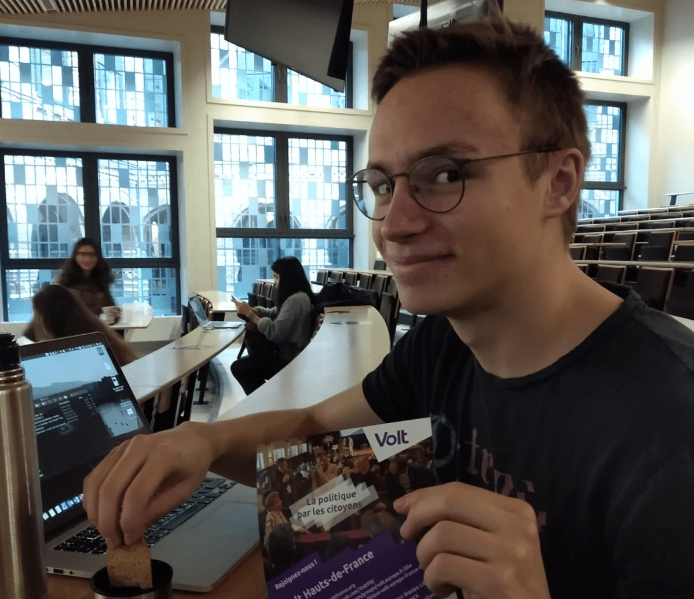

Soit bénévolt
Êtes-vous intéresse par Volt, mais vous n'êtes pas encore prết de devenir un membre officiel ? Vous pouvez toujours participer dans nos activités comme bénévol(t).
C'est quoi la différence entre bénévol(t) et membre ?
Les bénévolts peuvent rejoindre une équipe local et participer à ses activités. Peu nous importe si vous êtes adhèrent d'une autre partie politique ou - vous n'êtes pas disponible de temps à autre. Nous sommes ravis si vous êtes présent pour contribuer vos idées, vos avis et votre énergie pour aider à pousser notre équipe. Vous pouvez aussi rester en courants des nos activités à l'échelle nationale et européenne en utilisant notre bulletin interne si vous le souhaitez.
Comme bénévolt, vous n'êtes pas obligé de payer une cotisation, mais en conséquence, vous n'avez pas d'accès dans notre système de communication et collaboration européenne. De plus, vous n'avez pas de droit de voter dans nos votes internes, parce qu'ils sont seulement accessibles pour les membres officiels.
Quelles sont les activités principales pour les bénévolts ?
Au niveau local, nous ne différencions pas. Vous ferez part de l'équipe, vous pouvez participer aux réunions et événements comme vous voulez. Si vous êtes motivés de travailler sur une certaine politique, vous pouvez prendre la responsabilité et trouver une proposition - nous vous montrez notre processus et vous assister. Vous pouvez aider avec l'organisation des événements, organiser les vôtres ou contribuer dans les efforts des autres associations. Aider dans notre campagne et comment toucher et inciter les citoyens - y compris la distribution des affiches pour les lève tôt dans la gare et l'université (chacun.e reçoit son petit déjeuner après).
Beaucoup de nos membres actuels avaient besoin de temps pour vérifier si Volt était un mouvement ils ont voulu ou veulent s'engager plus actifs. Il y a de bénévols qui ont changé leurs statuts pour devenir membre et les autres qui ont enfin quittés le mouvement. Nous laisserons à tout le monde suffisamment de temps pour trouver leur préférence et entre-temps, nous apprécions l'effort de chacun.e pour améliorer nos communautés.
Comment peut-je devenir bénévoltr?
Le site de Volt France n'a pas une bonne page pour la registration de membres et de bénévolts pour le moment. Donc vous pouvez vous diriger vers volt.team, et après s'enregistrer, nous vous contacterons. Entre-temps vous êtres bienvenue dans nos réunions. Bien sur c'est aussi possible de contacter le lead de ville directement. Nous nous réjouissons de vous voir très bientôt
Visiter volt.team